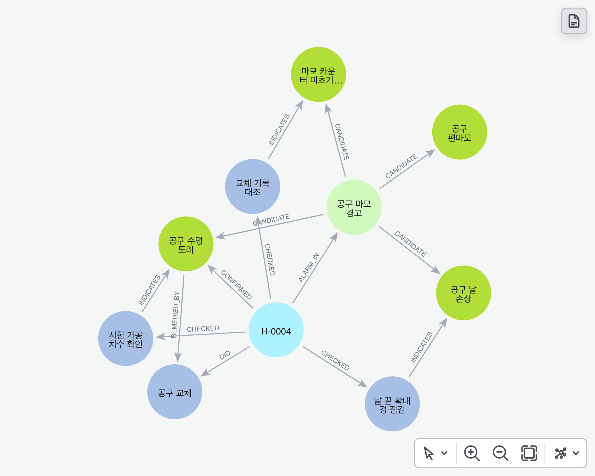
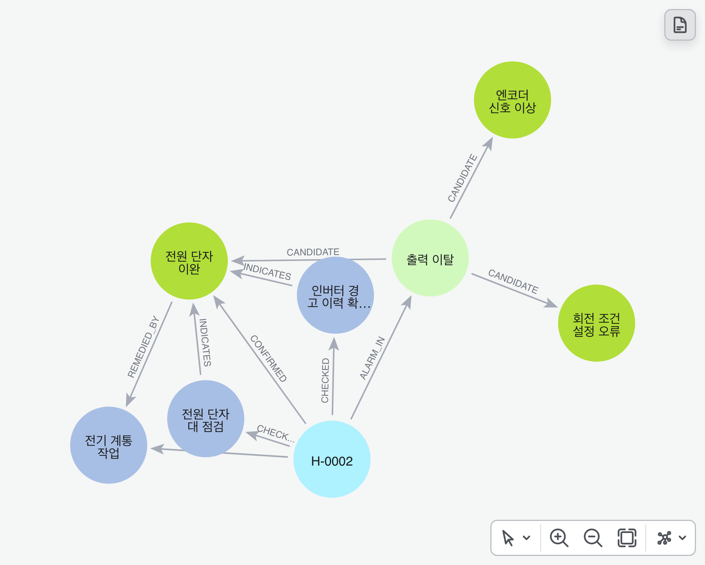
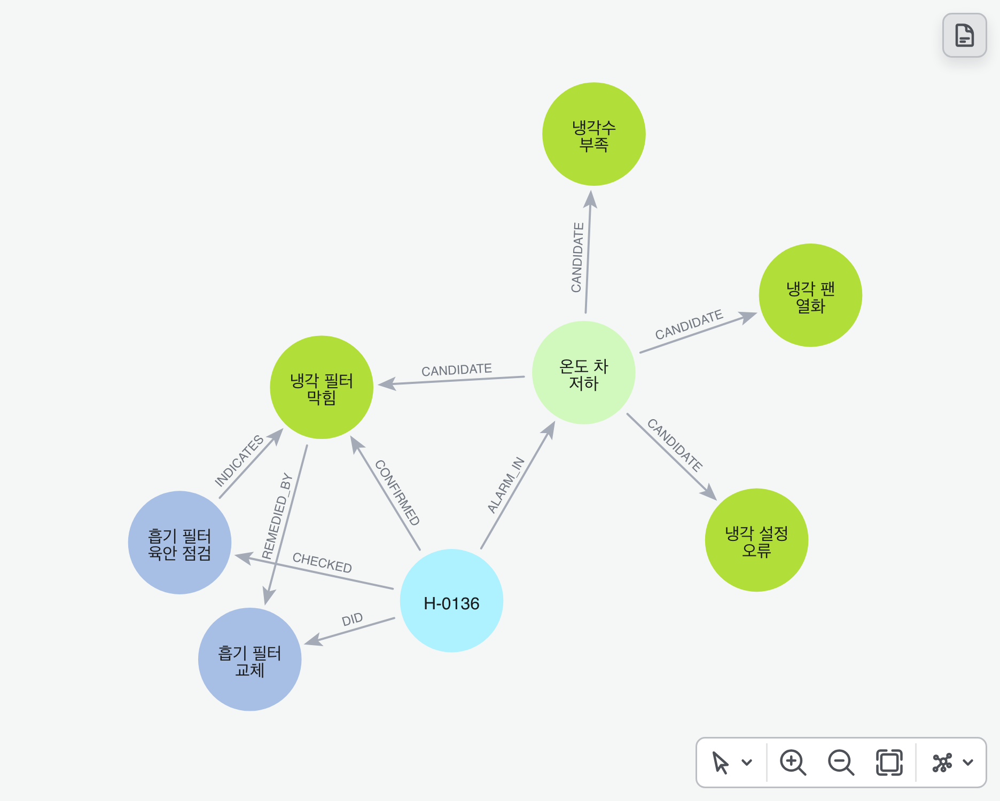
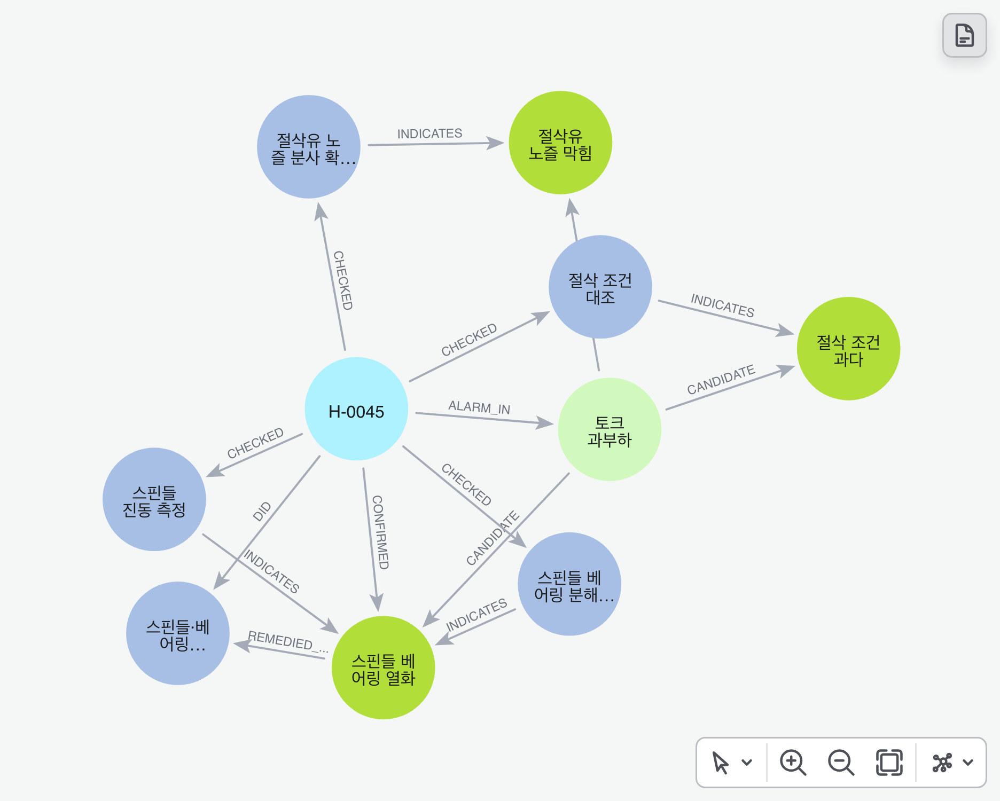

관계표 없는 매뉴얼(MG-MM 3.0) + 승인된 정비 이력 300건 → 그래프 · 2026-11-03
'정답'은 옛 매뉴얼 부록 A, '그래프'는 이력에서 센 연결입니다(괄호 = 근거 건수). 원인이 '맞음'이면 증상군 · 점검 · 조치가 모두 정답과 같습니다.
| 원인 | 증상군 | 정답 점검 | 그래프 점검 | 정답 조치 | 그래프 조치 | 결과 |
|---|---|---|---|---|---|---|
| TW-1 공구 수명 도래 | 공구 마모 경고 | 2.1.5 시험 가공 치수 확인 | 2.1.5 시험 가공 치수 확인 (21건) | 3.1.1 공구 교체 | 3.1.1 공구 교체 (21건) | 맞음 |
| TW-2 공구 날 손상 | 공구 마모 경고 | 2.1.4 날 끝 확대경 점검 | 2.1.4 날 끝 확대경 점검 (8건) | 3.1.1 공구 교체 | 3.1.1 공구 교체 (8건) | 맞음 |
| TW-3 마모 카운터 미초기화 | 공구 마모 경고 | 2.1.3 교체 기록 대조 | 2.1.3 교체 기록 대조 (8건) | 3.1.2 마모 카운터 정정 | 3.1.2 마모 카운터 정정 (8건) | 맞음 |
| TW-4 공구 편마모 | 공구 마모 경고 | 2.1.6 날 마모 띠·콜릿 흔들림 점검 | 2.1.6 날 마모 띠·콜릿 흔들림 점검 (3건) | 3.1.3 콜릿 청소 후 공구 교체 | 3.1.3 콜릿 청소 후 공구 교체 (3건) | 맞음 |
| PW-1 회전 조건 설정 오류 | 출력 이탈 | 2.2.3 회전 조건 설정 확인 | 2.2.3 회전 조건 설정 확인 (43건) | 3.2.1 가공 설정값 원복 | 3.2.1 가공 설정값 원복 (43건) | 맞음 |
| PW-2 전원 단자 이완 | 출력 이탈 | 2.2.5 인버터 경고 이력 확인 · 2.2.6 전원 단자대 점검 | 2.2.5 인버터 경고 이력 확인 (23건) · 2.2.6 전원 단자대 점검 (23건) | 3.5.1 전기 계통 작업 | 3.5.1 전기 계통 작업 (23건) | 맞음 |
| PW-3 엔코더 신호 이상 | 출력 이탈 | 2.2.4 엔코더 커넥터·케이블 육안 점검 | 2.2.4 엔코더 커넥터·케이블 육안 점검 (15건) | 3.2.2 엔코더 커넥터 재체결 | 3.2.2 엔코더 커넥터 재체결 (15건) | 맞음 |
| CL-1 냉각 필터 막힘 | 온도 차 저하 | 2.3.3 흡기 필터 육안 점검 | 2.3.3 흡기 필터 육안 점검 (57건) | 3.3.4 흡기 필터 교체 | 3.3.4 흡기 필터 교체 (57건) | 맞음 |
| CL-2 냉각 팬 열화 | 온도 차 저하 | 2.3.4 냉각 팬 분해 점검 | 2.3.4 냉각 팬 분해 점검 (25건) | 3.3.2 냉각 팬 모듈 교체 | 3.3.2 냉각 팬 모듈 교체 (25건) | 맞음 |
| CL-3 냉각수 부족 | 온도 차 저하 | 2.3.5 냉각수 수위 확인 | 2.3.5 냉각수 수위 확인 (10건) | 3.3.3 냉각수 보충 | 3.3.3 냉각수 보충 (10건) | 맞음 |
| CL-4 냉각 설정 오류 | 온도 차 저하 | 2.3.6 냉각 설정값 확인 | 2.3.6 냉각 설정값 확인 (16건) | 3.3.1 냉각 설정값 변경 | 3.3.1 냉각 설정값 변경 (16건) | 맞음 |
| LD-1 절삭유 노즐 막힘 | 토크 과부하 | 2.4.3 절삭유 노즐 분사 확인 | 2.4.3 절삭유 노즐 분사 확인 (8건) | 3.4.2 절삭유 노즐 청소·교체 | 3.4.2 절삭유 노즐 청소·교체 (8건) | 맞음 |
| LD-2 스핀들 베어링 열화 | 토크 과부하 | 2.4.5 스핀들 진동 측정 · 2.4.6 스핀들 베어링 분해 점검 | 2.4.5 스핀들 진동 측정 (6건) · 2.4.6 스핀들 베어링 분해 점검 (6건) | 3.5.2 스핀들·베어링 분해 | 3.5.2 스핀들·베어링 분해 (6건) | 맞음 |
| LD-3 절삭 조건 과다 | 토크 과부하 | 2.4.4 절삭 조건 대조 | 2.4.4 절삭 조건 대조 (15건) | 3.4.1 절삭 조건 조정 | 3.4.1 절삭 조건 조정 (15건) | 맞음 |
| 증상군 | 이력 | 원인 후보 (그래프 / 정답) | 점검 (그래프 / 매뉴얼) | 조치 (그래프 / 정답) | 첫 점검(그래프) | 점검 순서(그래프) |
|---|---|---|---|---|---|---|
| 공구 마모 경고 | 40 | 4 / 4 | 4 / 4 | 3 / 3 | 2.1.3 교체 기록 대조 | 2.1.3 교체 기록 대조 → 2.1.4 날 끝 확대경 점검 → 2.1.5 시험 가공 치수 확인 → 2.1.6 날 마모 띠·콜릿 흔들림 점검 |
| 출력 이탈 | 81 | 3 / 3 | 4 / 4 | 3 / 3 | 2.2.3 회전 조건 설정 확인 | 2.2.3 회전 조건 설정 확인 → 2.2.5 인버터 경고 이력 확인 → 2.2.4 엔코더 커넥터·케이블 육안 점검 |
| 온도 차 저하 | 108 | 4 / 4 | 4 / 4 | 4 / 4 | 2.3.3 흡기 필터 육안 점검 | 2.3.3 흡기 필터 육안 점검 → 2.3.6 냉각 설정값 확인 → 2.3.5 냉각수 수위 확인 |
| 토크 과부하 | 29 | 3 / 3 | 4 / 4 | 3 / 3 | 2.4.4 절삭 조건 대조 | 2.4.4 절삭 조건 대조 → 2.4.3 절삭유 노즐 분사 확인 → 2.4.5 스핀들 진동 측정 |
순서 = 정비자가 혼자 할 수 있는 점검(A · B) 가운데, 그 점검이 가리키는 원인이 이력에서 차지한 비율 ÷ 소요 분이 큰 차례입니다.
그래프 DB 화면에서 알람 한 건 둘레만 그린 그림입니다. 초록 = 원인, 파랑 = 매뉴얼 절(점검 · 조치), 연두 = 증상군, 하늘 = 이 알람 기록.




이력 사본에 일부러 잡음을 넣었습니다(원본은 그대로 · 씨앗 20261103). 한 건마다 정한 비율로 ① 이상이던 점검 결과 칸을 비우고 ② 원인을 같은 증상군의 다른 원인으로 바꿔 적고 ③ 조치 단계를 지웠습니다. '받는 근거'는 그래프 연결을 몇 건부터 믿을지입니다(몫 30% = 같은 원인의 연결 가운데 가장 큰 근거의 30% 이상만).
| 잡음 비율 | 넣은 잡음 (빈 결과 · 틀린 원인 · 빠진 조치) | 받는 근거 | 원인 14 맞음 · 빠짐 · 틀림 | 연결 44 맞음 · 빠짐 · 틀림 |
|---|---|---|---|---|
| 0% | 0 · 0 · 0 | 1건 이상 | 14 · 0 · 0 | 44 · 0 · 0 |
| 0% | 0 · 0 · 0 | 3건 이상 | 14 · 0 · 0 | 44 · 0 · 0 |
| 0% | 0 · 0 · 0 | 몫 30% | 14 · 0 · 0 | 44 · 0 · 0 |
| 5% | 11 · 12 · 15 | 1건 이상 | 7 · 0 · 7 | 44 · 0 · 19 |
| 5% | 11 · 12 · 15 | 3건 이상 | 14 · 0 · 0 | 44 · 0 · 0 |
| 5% | 11 · 12 · 15 | 몫 30% | 14 · 0 · 0 | 44 · 0 · 0 |
| 10% | 24 · 29 · 32 | 1건 이상 | 3 · 0 · 11 | 44 · 0 · 34 |
| 10% | 24 · 29 · 32 | 3건 이상 | 11 · 1 · 2 | 41 · 3 · 5 |
| 10% | 24 · 29 · 32 | 몫 30% | 13 · 0 · 1 | 44 · 0 · 1 |
| 20% | 46 · 50 · 55 | 1건 이상 | 0 · 0 · 14 | 44 · 0 · 38 |
| 20% | 46 · 50 · 55 | 3건 이상 | 7 · 1 · 6 | 42 · 2 · 10 |
| 20% | 46 · 50 · 55 | 몫 30% | 7 · 0 · 7 | 44 · 0 · 13 |
| 30% | 82 · 76 · 81 | 1건 이상 | 1 · 0 · 13 | 44 · 0 · 50 |
| 30% | 82 · 76 · 81 | 3건 이상 | 6 · 0 · 8 | 42 · 2 · 17 |
| 30% | 82 · 76 · 81 | 몫 30% | 5 · 0 · 9 | 44 · 0 · 20 |
데이터는 가상이고 규칙은 우리가 정했습니다. 이력의 점검 · 원인 · 조치 기록이 깨끗하게 만들어져 있어 연결이 거의 그대로 살아나는 것이 당연한 조건입니다. 실제 현장 기록처럼 빠지거나 틀린 기록이 섞이면 결과가 달라집니다.